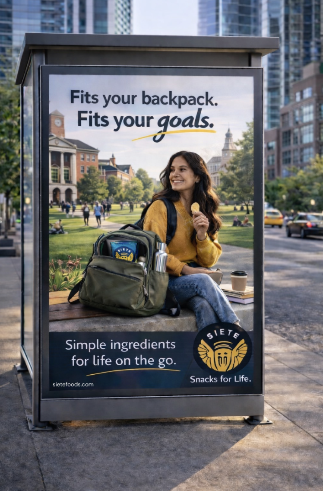
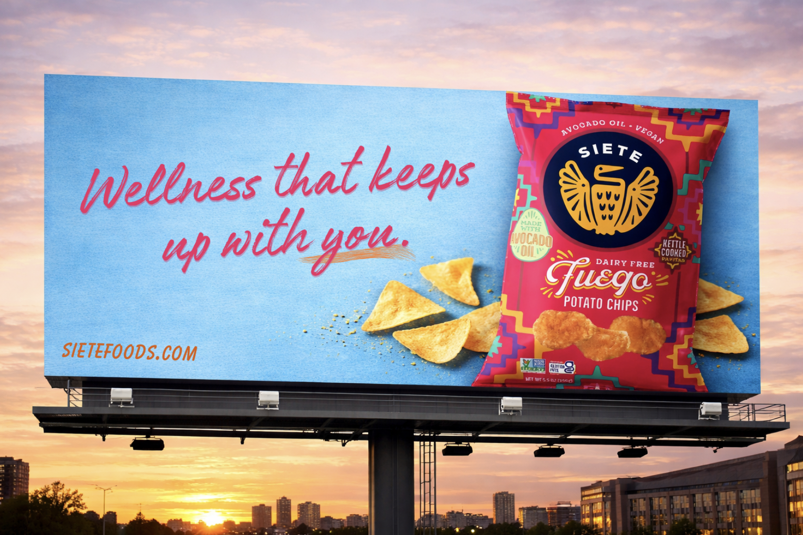
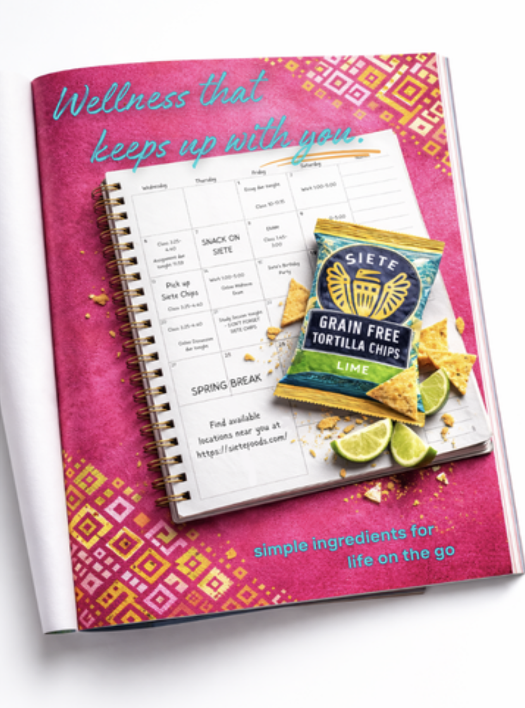

01
Siete Foods Back-to-School Campaign
Campaign Strategy / OOH / Magazine / Billboard
“Wellness that keeps up with you.”



Objective
Create a back-to-school campaign promoting Siete’s single-serve snacks as a healthy and convenient option for college students.
Audience
Health-conscious Gen Z college students with busy schedules.
Insight
Students want wellness products that fit naturally into their routines instead of interrupting them.
Creative Rationale
The campaign places Siete into everyday student moments like studying, commuting, and planning to make the brand feel connected to real college life.